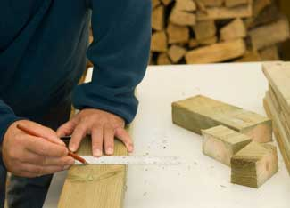

So you’ve just finished fixing up the old deck, redoing a room for a new baby, or remodeling a bathroom. Now what do you do with all of the old materials? Most of them can be recycled or reused; your leftovers can become another’s treasure. Many options are available, so don’t just throw the items on the curb.
The first step in most projects is deciding exactly what you’re going to need. You can decrease the amount of leftover materials you’ll have by correctly calculating in the beginning how much you will need. Measure the area to learn how much drywall or lumber you’ll need, and do not buy much extra. You can always go back and get another piece. A paint specialist can help you decide exactly how much paint to buy.
If you end up with extra materials even after careful calculation, consider saving them for your next project. You can also create smaller projects such as birdhouses or window boxes from leftover wood. If you only have an inch or two of paint left in the bottom of the can, store it properly and use it for later touch-ups. A lot of extra paint usually calls for storage, using it on another project or using it as an undercoat or base coat in another room.
Neighbors also may be able to use leftover materials or even those that you’ve removed. An old sink or door may be just what they need to finish their own project. Craigslist or eBay are online options to find someone who could use your old materials. Freecycle is another organization that will connect you with others who might take your extra or old materials. You could also donate the materials to local churches, charities or high school drama departments. Be creative. Many organizations always need things such as paint or wood.
Nowadays, many companies are buying and selling leftover building materials. See what is available in your area. Habitat for Humanity can also use doors, windows and other materials for their projects. Their ReStores sell reclaimed or reused products.
The third option is to recycle your leftovers. Earth 911 will give you a list of places in your area where you can recycle materials. Contact your local household hazardous waste site to find out how to properly recycle or dispose of paint or other hazardous material. Steel paint cans are recyclable, and paint can be reprocessed or reblended.
Search the Yellow Pages or online for other recycling centers that take materials such as tile or laminate flooring. Check the Internet for contractors or companies that use secondhand or leftover materials - you may be able to donate your extras to them. Try Building Materials Reuse Association or Build.Recycle.Net for more resources.
You have plenty of options for those leftover materials, so don’t let them collect dust in your basement or go to a landfill. Find the option that works best for you and consider buying used materials for your next project. You’ll save money and add character to your remodel with unique materials.
For more information, check out these articles:
|
 ISTOCKPHOTO/CLAUS JEPSEN Use precise measurements to learn how much material you'll need, and then reuse or recycle any leftover material. |
|
|